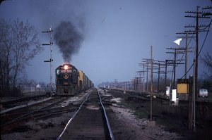
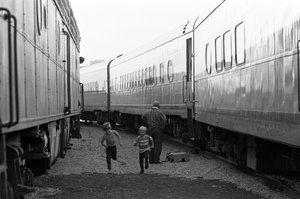
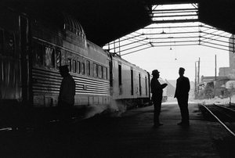

Wallace W. Abbey Collection
John F. Bjorklund Collection
Kate Botkin Collection
William Botkin Collection
Donald W. Furler Collection
John Gruber Collection
Robert A. Hadley Collection
Victor Hand Collection
John C. Illman Collection
Leo King Collection
J. Parker Lamb Collection

David T. Mainey Collection
Thomas F. McIlwraith Collection
Henry Posner III Collection
Ted Rose Collection
Jim Shaughnessy Collection
Fred M. Springer Collection